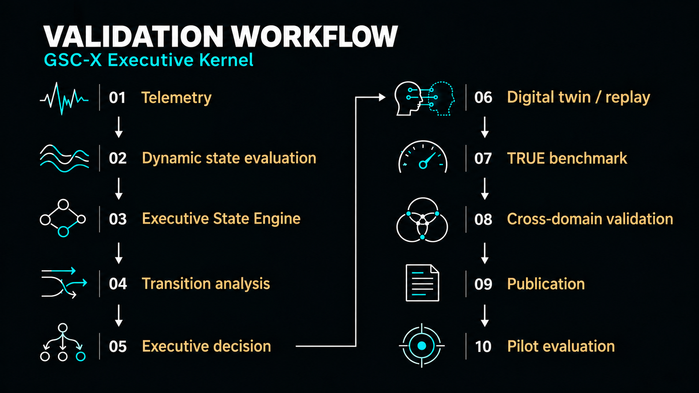

Technology overview
GSC-X is a platform-independent software algorithm with a predictive executive stabilization architecture for complex dynamic systems. It can operate above existing systems as an additional layer for monitoring, early warning, decision support and adaptive stabilization.
It observes system dynamics, evaluates emerging instability, estimates resilience and supports intervention before critical transitions fully develop. It does not require the replacement of existing controllers, monitoring platforms or infrastructure.
Executive Kernel
The Executive Kernel brings telemetry ingestion, dynamic and executive state evaluation, transition analysis, decision support and validation feedback together in a unified processing pipeline.
1. Telemetry ingestion
Inputs can include simulations, digital twins, replay datasets, CSV streams, sensor and industrial data, reliability records, robotics environments, cloud infrastructure and domain-specific runtime outputs. Data connections and interpretation are adapted to each system.
2. Dynamic state evaluation
The architecture continuously evaluates system state, accumulated instability, operational stress, recovery reserve and deviation from safe, productive or resilient regimes. It considers these quantities in their temporal context rather than only as isolated threshold crossings.
3. Core internal indices
The Executive Kernel extends the original CM and ELI logic with a broader evaluation of transitions, reserves and risk.
- CM — Context Memory: tracks recent dynamic history and recovery context.
- ELI — Early Limit Indicator: estimates proximity to future operational limits.
- PTM — Predictive Transition Memory: captures transition patterns before instability becomes critical.
- MR — Metastability Reserve: estimates remaining recovery and stability capacity.
- MRI — Metastability Risk Index: summarizes the risk of entering a fragile or critical regime.
4. Executive State Engine
GSC-X maps system behavior into executive operating states, including high reserve, stability, fragility, low reserve, critical conditions and recovery.
- HIGH_RESERVE
- STABLE
- FRAGILE
- LOW_RESERVE
- CRITICAL
- RECOVERY
These are examples of evaluated states, rather than a mandatory linear sequence. Transitions depend on system dynamics and the configuration of the particular domain.
5. Executive transitions
The transition layer tracks degradation, recovery, stabilization and system reorganization. It helps distinguish harmless fluctuations from structurally significant instability and follows regime changes as they develop over time.
6. Executive decisions
The decision layer can support warnings, risk mitigation, task routing, operating-mode selection, recovery and stabilization recommendations. Its authority and any interventions are defined by the particular integration and validation context.
Universal Metastability Kernel Framework
Executive Kernel research is being extended through the emerging Universal Metastability Kernel Framework. It aims to unify executive state evaluation, transition analysis, resilience estimation and adaptive stabilization across different systems.
Cross-domain validation covers reliability, industrial control, fusion-inspired systems, robotics, spaceflight, batteries, nuclear engineering, energy networks, cardiac dynamics, internet infrastructure and the Spectral Observatory.
The framework is currently a research and validation architecture. A planned standalone publication is intended to provide its formal description, reproducible artifacts and scientific context.
Integration model
GSC-X is designed as an interface-agnostic layer. It can work with offline data, simulations and continuous telemetry; the availability of individual interfaces depends on the implementation and integration.
- CSV and structured telemetry
- REST and custom APIs
- OPC-UA and industrial gateway concepts
- ROS and robotics pipelines
- Digital twins, replay validation and what-if simulations
- Cloud, local and edge runtime environments
Future real-time control interfaces require separate integration and validation.

The workflow connects technical evaluation with reproducible tests and research reporting. Pilot deployment is a subsequent stage requiring evaluation under the conditions of the particular partner.
Technology status
The GSC-X Executive Kernel is implemented as a research and validation architecture with public sandbox environments, benchmark outputs, validation reports and publications. Architectural components are included in filed patent applications.
Filed patents: GSC-F, GSC-S, GSC-C and GSC-X.
The current focus is cross-domain validation, reproducibility, technical reporting, formalization of the Universal Metastability Kernel Framework and preparation for pilot evaluation with industrial, scientific, infrastructure and research partners.